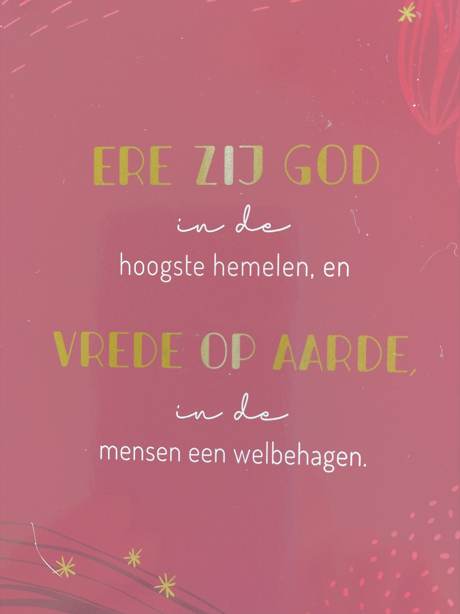
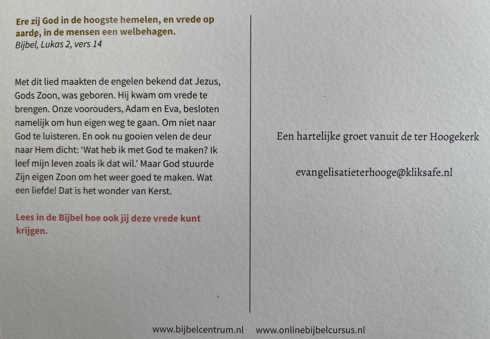

Er moet me iets van het hart. Normaal gesproken ben ik niet zo van de roeptoeterende meningenmachine, maar nu ben ik zodanig geraakt dat ik die behoefte niet kan bedwingen. Net zoals de zelfverklaarde postbodes van God dat in deze kwestie blijkbaar ook niet konden.

Het is de avond van Tweede Kerstdag als ik opeens de brievenbus hoor kletteren. Nieuwsgierig ga ik kijken, me ondertussen afvragend of het niet de onstuimige zuidwester is die weer eens aan de voordeur kleppert. Maar het waait amper, besef ik dan. Is het dan misschien één van mijn neefjes die zijn sleutel is vergeten en door de -nieuwerwetse maar regelmatig haperende- beeldbel in de steek wordt gelaten? Ach nee, die bedienen zich niet van zoiets ambachtelijks als brievenbus klepperen, die zouden acuut de smartphone gebruiken om hun aanwezigheid te melden.
Nee, er blijkt post bezorgd te zijn. Op Tweede Kerstdag? denk ik nog. Misschien één van de buren, die na de zware kerstdis nu op metabolische avondwandeling nog gauw even de eigen-ontwerp-kerstkaart die ze van man en mij kregen, willen beantwoorden…
Gretig –want kaartjes krijgen vind ik leuk- haal ik de ansicht tussen de tochtborstels uit en lees: “Ere zij God in de hoogste hemelen en vrede op aarde in de mensen een welbehagen.” In net iets andere bewoordingen herken ik het lied van vroeger, toen ik met mijn broer Arno in het St. Bavokinderkoor van Oostburg zong. En toen hij mocht voorzingen en ik niet, omdat hij een hoge heldere jongensstem had en ik die van een donkerbruine brombeer. Bij wijze van troost viel mij de eer van de triangel te beurt. Maar dit terzijde.
Enfin, ietwat verbaasd probeer ik te bedenken wie van onze vrienden, kennissen of buren zoveel stichtelijks met ons zou willen delen. Ongelofelijk, hoeveel namen en gezichten er dan in een fractie van seconden door je hoofd kunnen schieten om overigens meteen weer met een ‘nee’ afgevinkt te worden. Niet omdat ze niet gelovig zijn, want ik ken mensen van allerlei gezindten en daar ben ik heel blij mee, maar veeleer omdat ze geen van allen zó nadrukkelijk hun geloof uitdragen. Allemaal vinden ze geloven een zuiver persoonlijke aangelegenheid, of ze nu katholiek, joods, protestants, moslim, polytheïst, humanist of atheïst zijn. Als we wel eens met elkaar over geloven praten, dan is het om ideeën, gebruiken of rituelen te delen, nooit om te oordelen.

Langzaam maar zeker dringt steeds luider het stemmetje van weerstand tot me door en jawel hoor, wanneer ik de kerstkaart omdraai, krijg ik de dogmatische boodschap van evangelisatie voorgeschoteld. Of ik soms net als Adam en Eva niet naar God wil luisteren en als zovelen de deur naar Hem dicht gooi, omdat ik wil leven zoals ik zelf verkies. (…) Maar dat ik in de Bijbel lees hoe ook ik vrede kan krijgen.
Is dit werkelijk? Ik geloof mijn ogen niet. Alsof ik niet goed bezig ben, alsof ik afgekeurd word, alsof ik gered moet worden. Het stemmetje van de weerstand is inmiddels aangezwollen tot een storm van woede. Hoe brutaal, hoe belerend, hoe beledigend om zó aangesproken te worden, ik ben des duivels! Maar wat ik vooral ongehoord en aanmatigend vind, is om God door de brievenbus geduwd te krijgen! Hijzelf waarschijnlijk ook, want die borstelharen zijn nou niet bepaald zachtzinnig. En wat te denken van de goedkope wijze waarop hij er doorheen ging, als reclamedrukwerk! En dan hebben we het nog niet eens gehad over het schenden van mijn privacy door het simpelweg negeren van de ja/nee-sticker op mijn brievenbus. Per slot van rekening zegt die toch luid en duidelijk dat ik géén ongeadresseerd reclamemateriaal wil, niet van winkels, niet van restaurants, niet van politieke partijen, niet van kerken, nee van niemand, zelfs niet van God!
Ja, je zou er zomaar door van je geloof vallen…
PS) Wat ik me later nog afvroeg, stel je voor dat deze christelijke marketeers ook mijn digitale brievenbus weten te vinden en me per mail willen bestoken met hun boodschap van God… Zou die dan eigenlijk wel door de spamfilter komen?